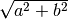

Geometry and Trig Explanations¶
If you haven’t read this geometry section yet go ahead and read it now. This chapter explains how the things I showed in the geometry section work.
The Diagonal¶
In the geometry chapter, the longest side of a triangle with a 90° corner was
magicallly  where and  were the other sides. If we
have a square with triangles in it like this…
were the other sides. If we
have a square with triangles in it like this…

…then we can calculate its area in a couple different ways:
- The square’s sides are each
, so the area must be
.
- The square consists of the yellow square whose area is
and 4 blue triangles with area each.
We must get the same area with both ways, so we get this:


The last step assumes  , but that’s not a problem because a triangle
with a negative side length doesn’t make much sense. “Hypotenuse” is a fancy
word that means the longest side of a triangle with a 90° angle, and that’s why
the
, but that’s not a problem because a triangle
with a negative side length doesn’t make much sense. “Hypotenuse” is a fancy
word that means the longest side of a triangle with a 90° angle, and that’s why
the  function is named hypot.
function is named hypot.
The atan2¶
In the trig section we learned how  and
and  are
defined with the unit circle. There’s also another, perhaps more common way to
define them using a triangle with one 90° corner.
are
defined with the unit circle. There’s also another, perhaps more common way to
define them using a triangle with one 90° corner.

This triangle is compatible with the  thing, but we can also
define sine, cosine and tangent in it like this:
thing, but we can also
define sine, cosine and tangent in it like this:


It’s also possible to define  with the unit circle, but it’s not as
simple as
with the unit circle, but it’s not as
simple as  and
and  so we skipped that.
so we skipped that.
These triangle definitions are perfectly compatible with the unit circle
equivalents. If you draw
a triangle like this
into the unit circle and then apply the triangle stuff, you get things like
 .
.
{kind=link}
Let’s solve  from the formula:
from the formula:


Here  is the inverse of
is the inverse of  , so
, so  . Most
programming languages have an
. Most
programming languages have an atan(x) function that returns  ,
and
,
and atan2(b,a) simply calculates  .
.
Note that if  then
then  is dividing by 0 and thus not defined, but
if is really really close to 0 then is about 90°.
is dividing by 0 and thus not defined, but
if is really really close to 0 then is about 90°.

That’s why atan2(1, 0) returns 90° and atan2(-1, 0) returns -90°. The
negativeness shouldn’t be a problem because negative angles behave correctly
with functions like , and .
Another reason why atan2 is good is that if we’re going to top right then
x and y grow at the same speed and
 , but if we go to
bottom left then
, but if we go to
bottom left then  and there’s no way to tell which direction we’re moving to. The
and there’s no way to tell which direction we’re moving to. The atan2
function considers the signs of its arguments and does the right thing with
them.